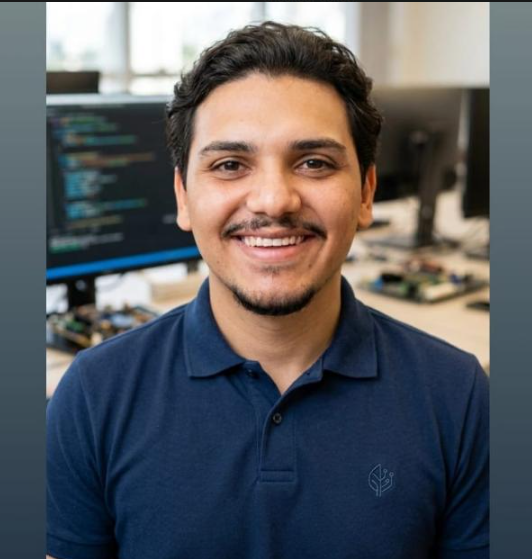

"Olá! Sou o Lauro. Sou apaixonado por tecnologia e fascinado por entender como as coisas funcionam por trás dos códigos, desde a programação web até sistemas embarcados. Gosto de transformar ideias em projetos práticos, resolver problemas desafiadores e aprender constantemente, sempre buscando criar soluções eficientes e inovadoras."

Minha trajetória acadêmica e aperfeiçoamento contínuo
Cursando • Previsão de conclusão para janeiro de 2028.
Capacitação sólida em HTML5, CSS3, JavaScript, C++ e lógica de programação voltada para sistemas web e embarcados.
Trabalhos realizados na indústria e projetos acadêmicos
Responsável pelo desenvolvimento do sistema de controle e da interface do usuário (UI) do novo Processador de Áudio de 5 Bandas da Teletronics. Foco na fluidez de navegação do display e experiência do operador.
Atuação no desenvolvimento de software embarcado para transmissores de FM de alta performance, garantindo estabilidade operacional e interfaces robustas para emissoras.
Projeto ainda em desenvolvimento,Trabalho de Conclusão de Curso (TCC) focado no desenvolvimento de uma inteligência artificial voltada para o ecossistema médico, integrando tecnologias web modernas.
Envie uma mensagem diretamente para mim:
GitHub: github.com/LauroJuniior
E-mail direto: laurocalixtojuniorkalixto@gmail.com | Tel: (35) 9.9738-9486